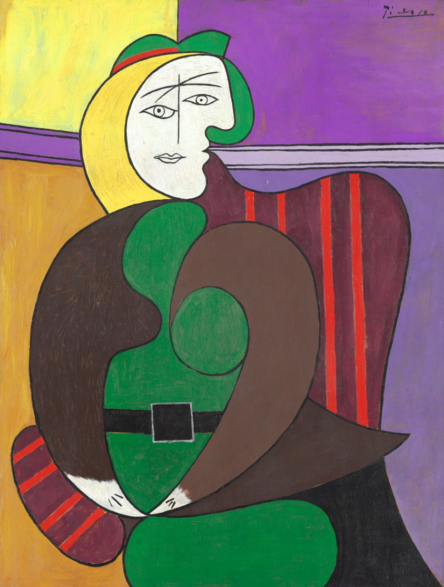
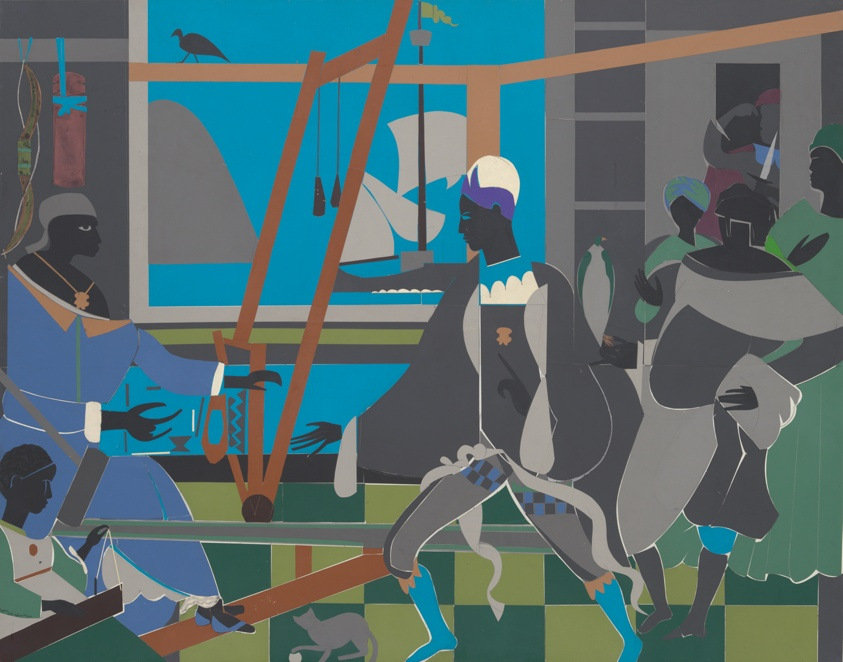

Lesson Plans for Educators
By Elisa Tilley
Elementary School
- Step 1: Help students to identify and understand core concepts like lines, shapes, colors, and symmetry
- Step 2: Have students create their own artwork using the identified concepts
- Step 3: Encourage students to share their artwork and discuss the concepts they used
Activity: The Red Armchair
Look closely at this painting by Pablo Picasso, The Red Armchair. It is a cubist painting, which means it shows the subject from multiple angles at the same time. In this case, Picasso painted the woman's face from the front and from the side at the same time.

- View the painting together and look quietly for one minute.
- Ask: What colors do you see? What shapes can you find?
- Ask: Can you find the face seen from the front and from the side?
- Have students draw a portrait of a friend using bright colors, showing both views of the face.
Middle School
- Step 1: Revisit the basic core concepts (lines, shapes, colors, etc.), while deepening understanding of design concepts like balance, contrast, and composition.
- Step 2: Help students identify different mediums (watercolor, acrylic, charcoal, etc.) and techniques (sculpture, collage, painting, etc.) by analyzing existing artworks.
- Step 3: Encourage students to create their own artwork using the identified concepts and techniques.
Activity: The Return of Odysseus
Look closely at this collage by Romare Bearden (1977). Bearden made it from cut and pasted papers. It retells a scene from Homer's Odyssey, an ancient Greek epic poem, and it was inspired by an Italian Renaissance fresco and by the art of Benin.

- Read a short summary of the Odyssey together, or ask students to share what they already know.
- Look at the collage for two minutes. Ask: Who do you think the central figures are? What elements and materials make up the collage?
- Discuss: Why might an artist retell an ancient story using different faces and settings?
- Have students pick a story they know well and make a paper collage that retells one scene in a new setting.
High School
- Step 1: Build on core design concepts (balance, contrast, composition) by studying how artists from different periods and movements, such as Impressionism, Cubism, or Surrealism, use them to express ideas.
- Step 2: Guide students in analyzing existing artworks through a critical lens, considering the artist's medium, technique, historical context, and intended message, and supporting their interpretations with evidence.
- Step 3: Challenge students to create an original artwork inspired by an artist or movement they studied, and write a short artist statement explaining the choices they made.
Activity: American Gothic
Grant Wood painted American Gothic in 1930. Viewers have long debated whether it is a satire of rural life or a tribute to it, which makes it a good painting for practicing interpretation.

- Step 1: Move beyond describing what an artwork looks like to analyzing how design choices such as composition, contrast, and symbolism create meaning, and how the artist's historical context shapes those choices.
- Step 2: Encourage students to form their own interpretation of a work, support it with visual evidence, and respectfully weigh it against other readings, such as satire versus tribute.
- Step 3: Have students create an original work that expresses a personal perspective or identity, using the media and techniques they have studied, and write a short artist statement explaining their choices.